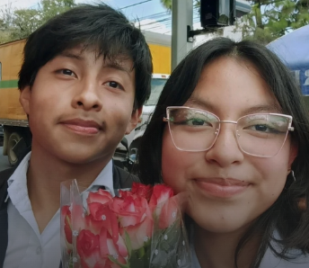

Sobre Mí

Soy André Yoj, estudiante de Perito en Informática en mi quinto año. Mi personalidad se define por ser ocurrente, curioso y determinado, aunque a veces la ansiedad me acompaña en el camino y creo firmemente que cada desafío es una oportunidad para crecer.
Más allá de la pantalla disfruto del voleibol, los videojuegos y la música que toca el alma, desde baladas melancólicas en inglés hasta la inconfundible voz de José José, sin olvidar el ritmo de la salsa y el merengue. Formo parte del grupo Scout donde he aprendido valores que llevo conmigo cada día, y me encanta cantar.
Mi meta es culminar mi carrera, construir un futuro sólido con mi propia casa y compartir mi vida con la persona que amo.
Nosotros

André & Brenda
Se conocieron en: La iglesia católica
Tiempo juntos: 10 meses · 14 de junio
Nuestra historia comenzó entre los bancos de la iglesia. Yo era tímido, pero ella tuvo la valentía de acercarse y enamorar mi corazón con su esencia única.
Admiro profundamente su imaginación, su creatividad para transformar lo simple en arte, y la forma tan especial en que conecta con los niños. Y no puedo evitar mencionar que su destreza para escribir me inspira cada día a ser mejor.
"Juntos construimos nuestro futuro, con fe y amor"
Mis Intereses
-
🏐
Voleibol
Deporte que me enseña trabajo en equipo y disciplina
-
🎶
Guitarra
Aprendiendo a expresar melodías con mis propias manos
-
⚜️
Grupo Scout
Servicio, valores y aventuras al aire libre
-
💻
Desarrollo
Creando aplicaciones, programas, paginas
-
🎵
Música
Desde baladas melancólicas hasta salsa y merengue
-
🎮
Videojuegos
Entretenimiento que también inspira creatividad